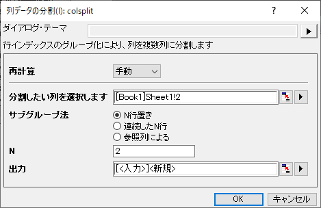
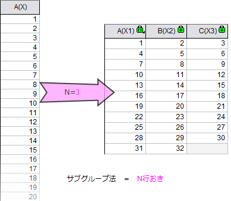
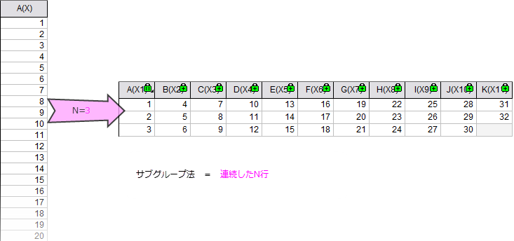
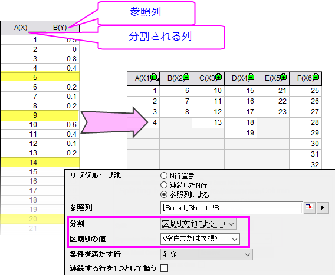
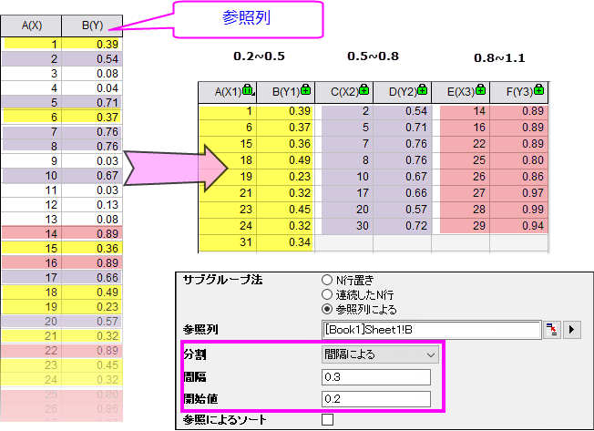

列データの分割
Split-Columns
1つまたは複数の列を複数の列に分割したい場合は、列の分割：colsplit ツールを使用します。
列の分割ツールを開くには、
- ワークブックウィンドウをアクティブにした状態で、データ整形：列データの分割を選択します。
または、
- コマンドウィンドウで、
colsplit -d;を実行します。

このツールはサブグループ化によって指定された列を分割します。ここでは、3つのサブグループ化方法があります。
- N番目の行ごとに抽出
- N 行ごとにグループとします。例えば、Nが3の場合、3つのグループとなり、1つ目のグループには1, 4, 7 ...1 + 3 * M行のデータが含まれ、2つ目のグループには 2, 5, 8, ...2 + 3 * M行のデータが含まれます。
- 
- 連続するN行による
- 連続するN 行ごとにグループとします。例えば、nrowsが5のとき、1から5行のデータが最初のグループ、6から10行のデータが2番目のグループとなります。
- 
- 参照列による
- ソース列を分割するための参照列を指定してください。参照列の値に従ってソース列を分割できます。
- セパレータにょる
- ソース列を複数の列に分割するための区切り文字として値（<空白または欠落>または<テキスト>を含む）を指定できます。
- 
- セパレータ値を指定したら、行適合条件オプションで条件を満たす行を処理する方法を決定できます。1）行を削除します（上のスクリーンショットのものと同じ）。 2）新しいブロックの始めとしてその行を使用します。 3）現在のブロックの終わりとして行を使用します。
- また、連続行を1つとして扱うチェックボックスを使用して、連続する行（区切り文字の条件を満たす行）を1つの区切り文字として扱うかどうかを決定できます。
- 間隔による
- 間隔と開始値を指定して、参照列に複数の範囲を定義してソース列を分割することができます。
- 
- このサンプルでは、指定された範囲（0.2〜0.5、0.5〜0.8および0.8〜1.1など）のデータポイントが取得され、さまざまなサブグループに保存されています。範囲を指定するには、開始値と間隔を設定します。
- 参照による並べ替えチェックボックスをオンにすると、参照列の値で結果サブグループを並べ替えることができます。